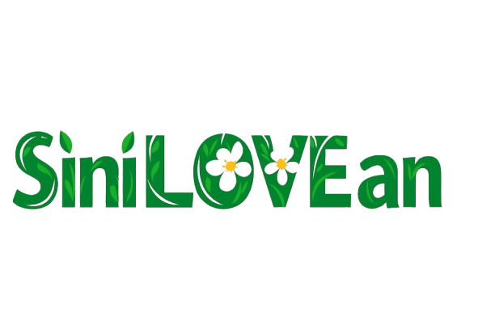
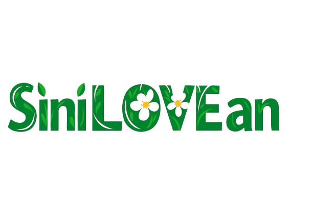
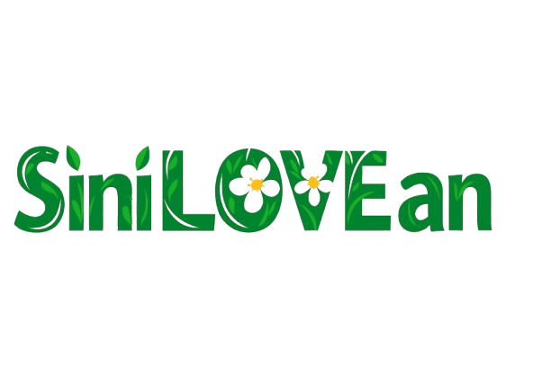
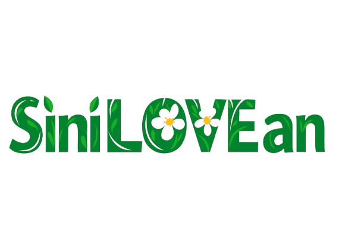

PasEla Farm, located at Macatad Ecotourism Site Km.3, Siniloan, Laguna , is an eco-agricultural tourism destination that is promoting sustainable farming and rural tourism. Originally, PasEla Farm established as a small, family-owned agricultural land which has cultivated vegetables, herbs, and fruit-bearing trees. Over the years, it has evolved into a venue where tourists can immerse themselves in farm life, offering various activities that brings the people closer to nature. The name “PasEla” was inspired by the owners names and also reflects their advocacy for their guests to “pasyal” or visit and enjoy the simple beauty of farm living.
Your cozy and budget-friendly escape! An A-frame cabin with AC, good for 4. Comes with free WiFi, parking, use of farm facilities, and breakfast for two. Perfect for a simple, relaxing stay.
A step up in comfort! With its own bathroom, hot shower, and an outdoor tub, this cabin is ideal for couples or small groups. Includes WiFi, parking, and breakfast for two—great for unwinding in style.
Spacious and fun! With AC, 1 bedroom + 2 bunkbeds, TV, karaoke, and a mini kitchen, this villa is perfect for groups up to 6. Includes WiFi, parking, BBQ grill, and breakfast for two.
Save more when it pours! Get ₱200 off (1 cabin), ₱500 off (2 cabins or villa), or ₱1,000 off (Private Farm). Valid until Aug 31, 2025—advance booking only!